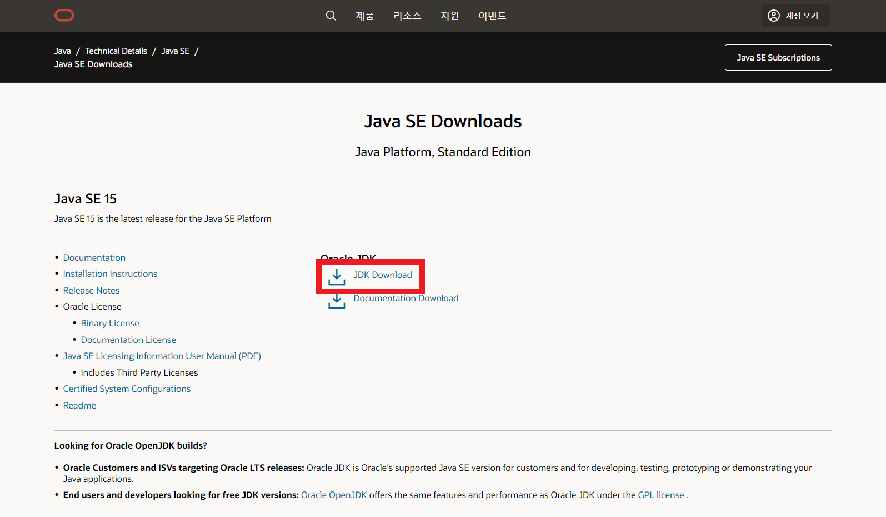
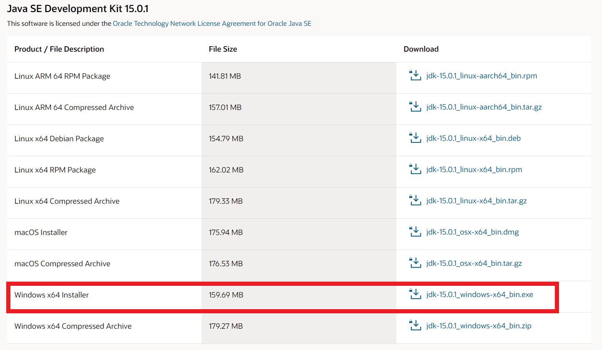
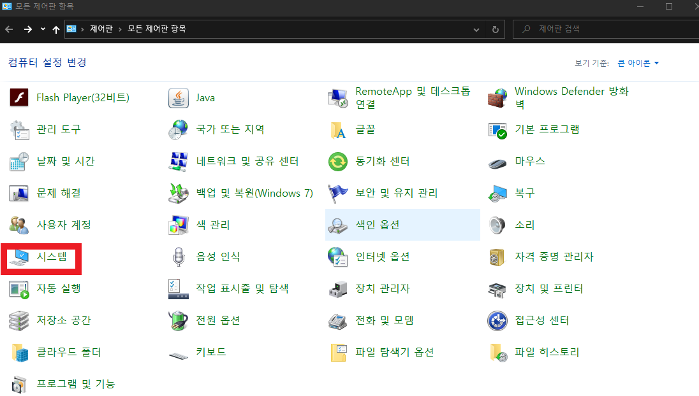
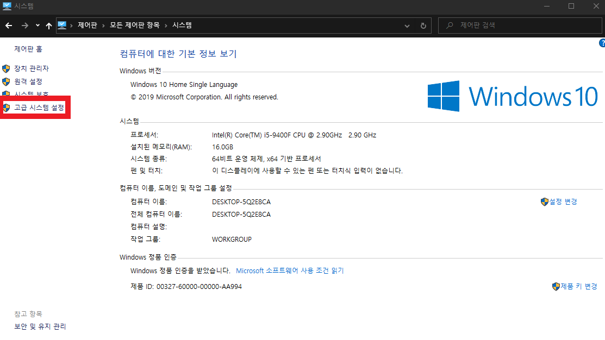
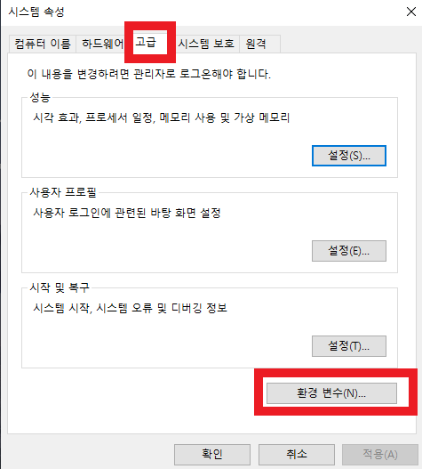
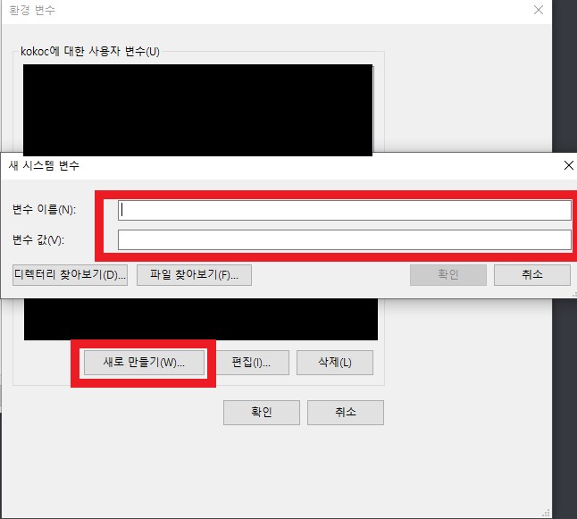
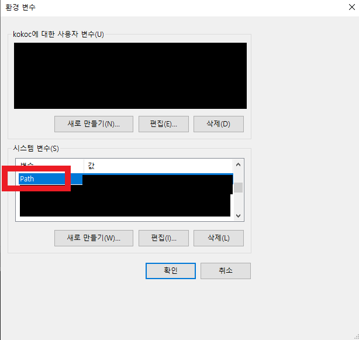
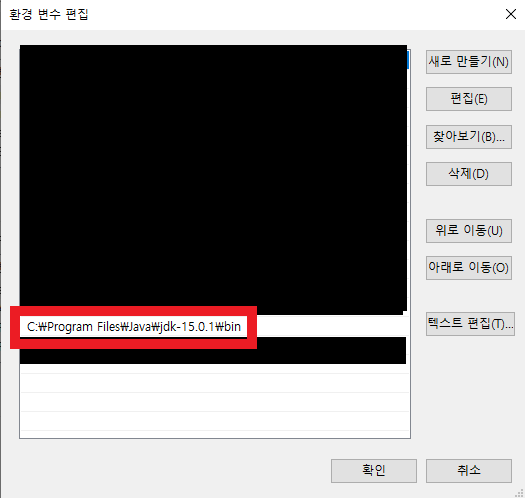
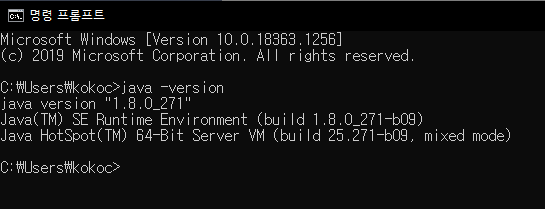

1
-

JDK 사이트로 이동하여, JDK Download를 클릭합니다.
-

위 항목에서 자신의 운영체제에 맞는 버전을 선택하여 다운로드 합니다.
-

다음으로 환경변수 설정을 위하여, 제어판에서 시스템 탭으로 들어갑니다.
-

시스템에서 고급 시스템 탭으로 들어갑니다.
-

고급 시스템 탭의 고급 > 환경변수 로 이동합니다.
-

환경변수에서 새로만들기 탭을 클릭 후, 변수이름에 JAVA_HOME을 넣고,
변수 값에 설치된 자바 폴더의 링크를 붙여넣습니다.
-

환경변수 생성 후, 시스템 변수에서 Path를 찾아 더블클릭합니다.
-

환경변수 편집에서 새로만들기를 하고, 자바의 링크를 추가해줍니다.
-

cmd에서 java -version 명령어로 자바의 버전이 표시된다면, 설치가 완료된 것입니다.